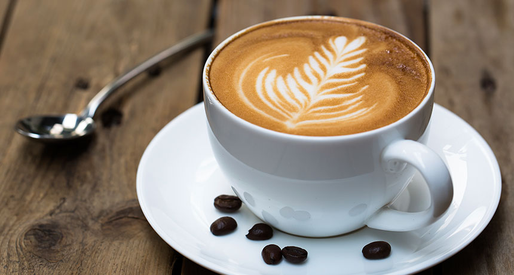

O nama
Coffeestop je premijerno odredište za uživanje u kafi.
Otvoreno sedam dana u nedelji, coffeestop je kafpć sa potpunom uslugom koji vam pruža odmor od svakodnebnih obaveza, mesto za druženje i kao što je već rečeno uživanje u kafi.
Šarm unutrašnjosti utiče na prijašnji život prostora kao irski pab, ali pod vizijom vlasnika Brajana Piccinija,
dbar se pretvorio u vrhunski restoran iz okruženja, za meštane Dorchester-a i radoznale posetioce.
Pomoću iskusnih barista meni coffeestop-a nudi odličan balans cene i kvaliteta.

INFORMACIJE:
COFFEESTOPVojvode Stepe 283
11010 Beograd, Srbija
P:011/2471-099
email: coffeestop@gmail.com